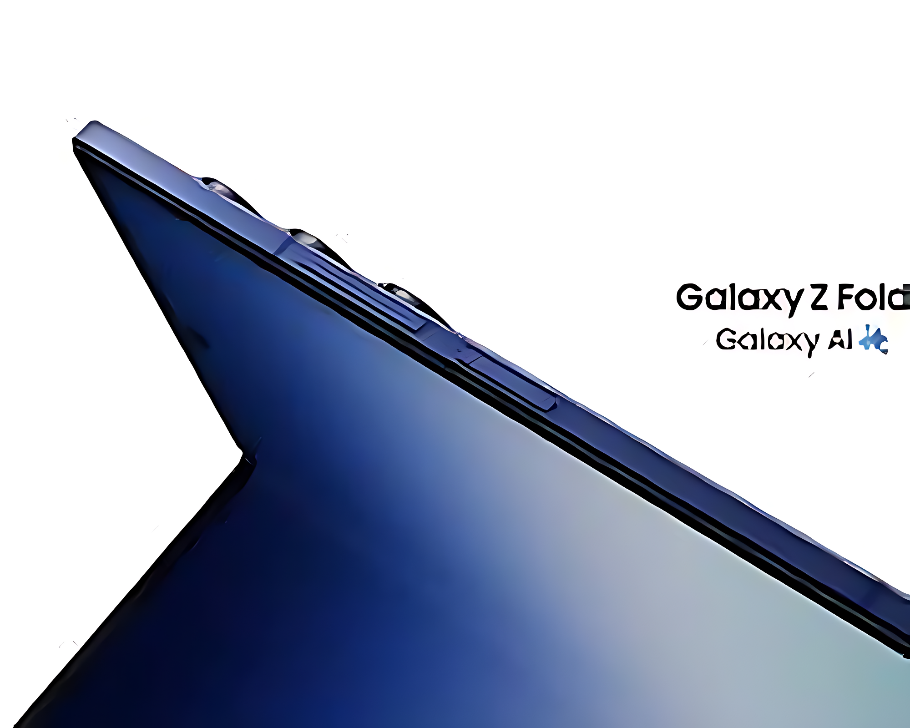
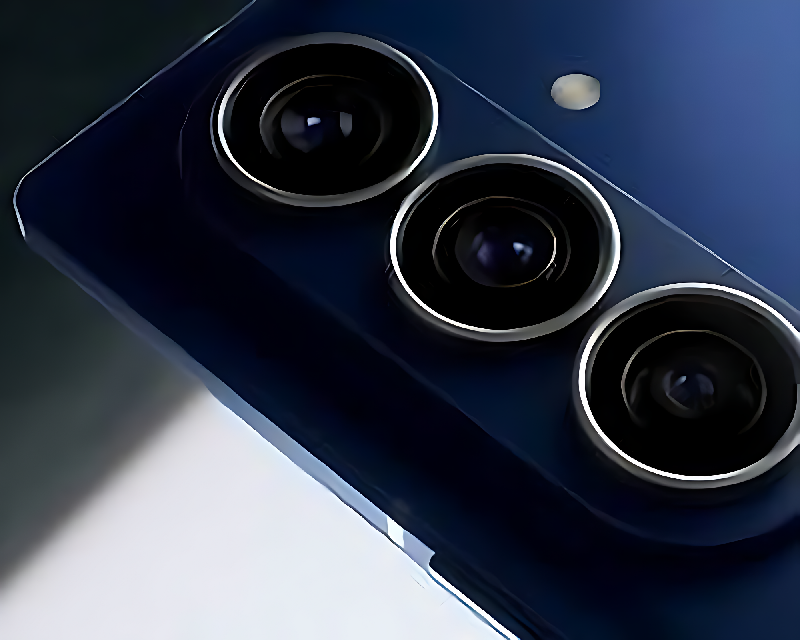

← BackSamsung Galaxy fold 7 a look ahead for Samsung's 2026 dual screen foldable
Let's admit it, The Samsung Galaxy Z fold 7 was fire. I mean, Look at this thing . Samsung literally gave us exactly what we asked for like they literally upgraded the main camera sensor to the 200 megapixel sensors with seen on the S series smartphone since the S23, . There are many things to mention such as How thin the device actually is How large The Inner Display is and many more things.The only thing that baffles me though is the price, I think that the default 7 for now is just a niche device for a lot of people, Because how can I spend rent money on a foldable device. But that is not to say it's a bad device though, It is really good in its regard.Now let's talk about the defaultZ fold 8 8. I just want to talk about one specific thing, how Apple was supposed to be the ones to debut a screen that has no line that shows up when you fold it display but then we saw Samsung literally showcasing the thing at CES this year, a very big slap to Apple . I mean 2026 is looking up to be a very good year for Samsung I've not even spoken about the trifold, let's leave that for next article .